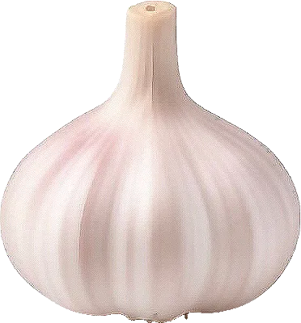

Ail

L’ail frais arrive en juin ; séché, il se conserve jusqu’à l’hiver.
- Saison : juin, juillet, août, septembre, octobre
- Pleine saison : juillet, août
- Famille botanique : Amaryllidacées
Histoire
Originaire d’Asie centrale, l’ail est cultivé depuis plus de 5 000 ans. Les Égyptiens en donnaient aux ouvriers des pyramides, et les Romains à leurs soldats. Selon la légende, on frotta les lèvres du futur Henri IV avec une gousse d’ail à sa naissance.
Origine et régions de production
La France produit un ail réputé, surtout dans le Sud :
- Occitanie (Lomagne, Lautrec)
- Drôme
- Provence
Plusieurs ails bénéficient d’une IGP, comme l’ail blanc de Lomagne, l’ail rose de Lautrec et l’ail de la Drôme ; l’ail violet de Cadours est AOP.
Bienfaits
L’ail parfume et apporte des composés intéressants :
- Allicine : Libérée quand on écrase la gousse, elle donne à l’ail son odeur caractéristique.
- Composés soufrés : Étudiés pour leur rôle dans la santé cardiovasculaire.
- Relève sans sel : Il aide à réduire le sel dans les plats.
- Petites quantités : Une ou deux gousses suffisent à parfumer un plat.
Variétés
- Ail blanc : Le plus courant, comme celui de Lomagne (IGP).
- Ail violet de Cadours : AOP, goût puissant.
- Ail rose de Lautrec : IGP, doux, se garde longtemps.
- Ail nouveau : Récolté frais au printemps, très doux.
- Ail noir : Ail fermenté, goût sucré de réglisse.
Conserver sans gaspiller
- Conservation : Au sec, à l’air, dans un panier : plusieurs mois. Jamais au frigo, il germe.
- Congélation : Épluché, en gousses ou haché dans l’huile en bac à glaçons : jusqu’à 6 mois.
- Rien ne se jette : Une gousse germée se plante dans un pot : les pousses se ciselent comme de la ciboulette. Les peaux parfument un bouillon.